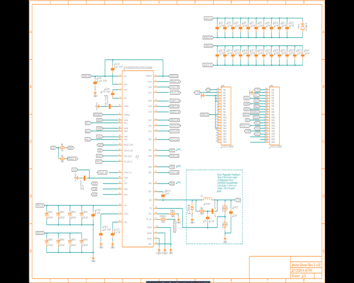
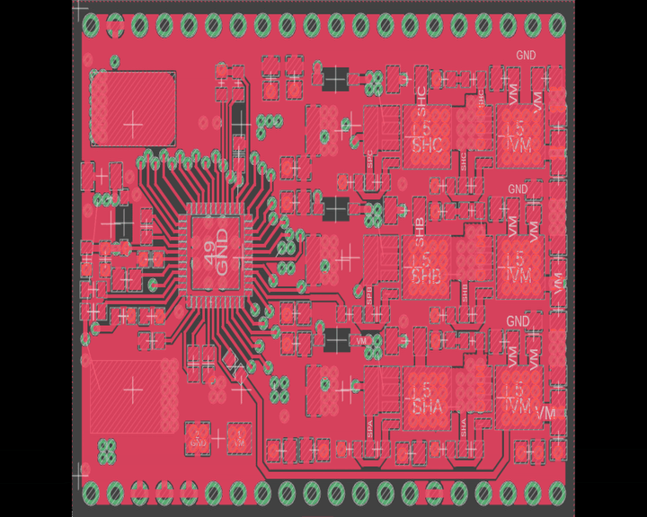
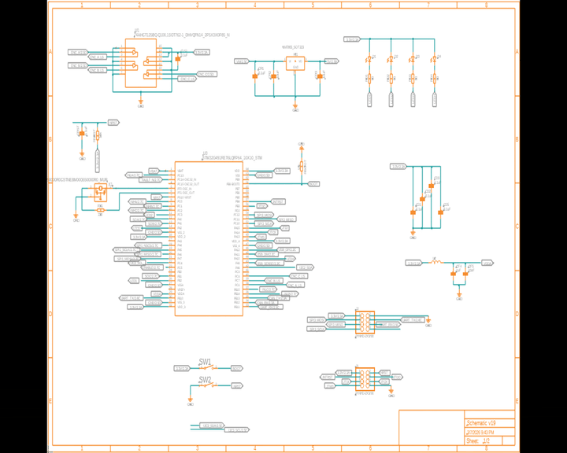

Split board BLDC motor controller design. Features DRV8323 gate driver inverter board and STM32G FOC control board.
Motor Controller CAD Model
Motor Inverter Schematic

The BLDC motor inverter schematic includes a DRV8323 gate driver, which drives the 6 power N-MOSFETs. The DRV8323 connects to the controller board through two sets of header pins. Recycling circuits are added to absorb voltage spikes and to recycle the power. Snubber circuits are added to filter noise and reduce EMI to protect the MOSFETs.
Motor Inverter PCB Layout

4-Layer PCB with components assembled on both top and bottom side. Design is optimzed for minial via usage and large power planes for thermal dissipation.
STM32 Control Board Schematic

The control board includes the STM32G491 with FOC control to support both sensored and sensorless motors. It features USB, CAN, I2C, SPI, and UART interfaces.
STM32 Control Board PCB Layout

2-layer PCB with pin header interface to the inverter board. OLED display is integrated to show status and debug information.